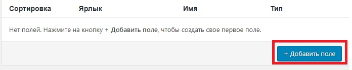

Может получиться так, что заказчику понадобится, что бы в записях появились дополнительные поля, которые не предусмотрены WP. Эти поля называются произвольными.
Для добавления таких полей используется плагин Advanced Custom Fields
После установки этого плагина, в консоли появится новый раздел
В этом разделе мы нажимаем "Добавить" после чего откроется окно добавления произвольных полей. Как и что заполнять ясно на интуитивном уровне, заострю внимание только на одном моменте
Условия отображения. Условие_1 равно Услови_2. Т.е. в первом условии мы выбираем что сравнивать, а во втором условии выбираем с чем сравнивать. К примеру у нас есть собственный тип записи - Портфолио. Значит это условие будет выглядеть так:
После этого нажимаем кнопку "Добавить поле"
В открывшемся окне мы заполняем поля:
Остальные свойства поля разбирать не буду, они в принципе понятны.
После заполнения всех полей, мы жмем опубликовать и теперь если зайти в редактирование нашей записи, у нас появится дополнительное поле.
Теперь для вывода информации дополнительных полей, мы должны в нашей верстке, в тех разделах где должна выводиться эта информация добавлять функцию php
Т.е. входящим параметром функции the_field() является имя нашего поля которое мы указывали в плагине